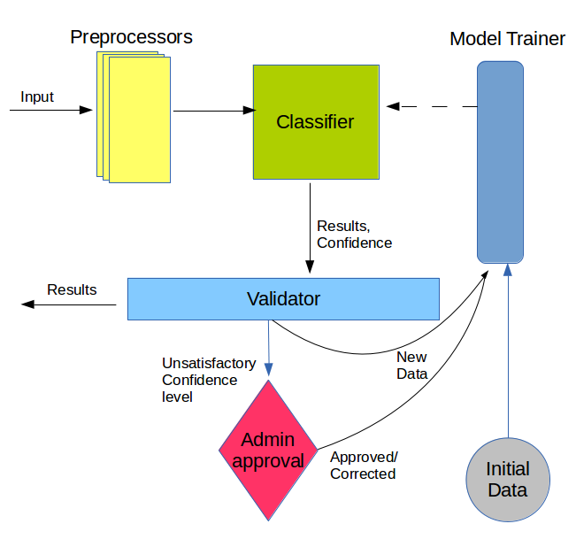

The classification module of SigmaCR is responsible for identifying the product type at the first hand. When the product type of the product is identified from the classification module, the system can use that information to identify it's features in the context of that process using the ontology.
The module will use the product reviews and some of the product specifications (if available) for the identification process. First the data will be preprocessed and then they will be forwaded to the classification process. Based on the results of the classification process and the confidence, the module will deside the next steps.
Following diagram shows the architecture of the module.
We will use WEKA tool for the core-classification. We will implement some of components to preprocess the data based on our requirements.
As time goes on new products with new techologies emerges, and the system should be smart to evolve with those changes. For that we need to update our model continuesly so that it learns how to identify the newer products which are significantly different from the initial products. We will save the results of a product identification and use that data back (with the initial data) when building the next classification model.
As discussed above the data is refeeded back to enhance the identification process. However this need to be handled with care. What if a product is mis-classified? The system will use that data in the next classification model version and mis-classify several more products. So the error might go increasing and will produce undesired and inaccurate results. And it also affects the other modules which are dependent on this.
To avoid these kinds of situations, we will make sure that the confidence of the product identification is acceptable. Based on the confidence level we will make the following actions.
We are very much confident that the product belongs to the classified category. So will accept the result and will queue it for training next model.
We are more than 50% confident that the product belongs to the classified category. But there is another category which might accept the product with above 20% confidence. In this case we'll use the classified category as the input for other modules, and at the same time will queue for admin's confirmation. Once the admin confirms the result are correct the results will be queued for training next model
We have several categories which accepts this product with each having 20% - 50% confidence. We will classify the product to "unknown" category in this case. And will do the steps for moderately confidence level.